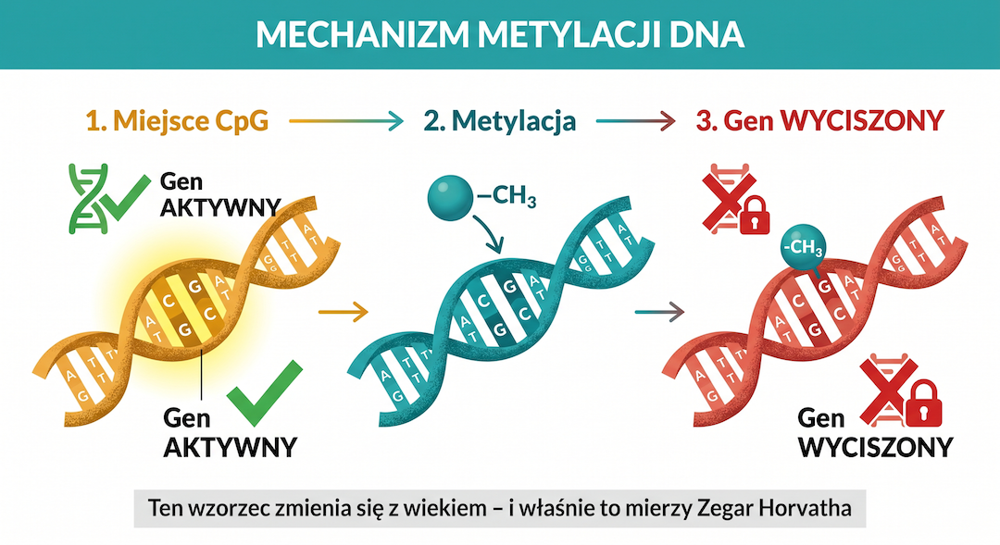
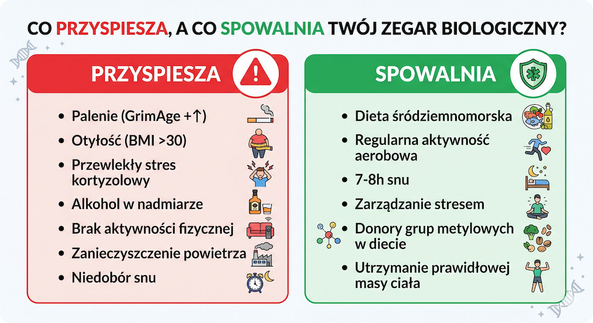
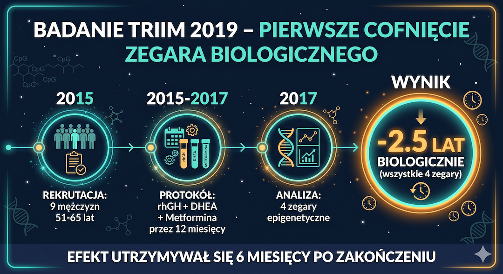

Wyobraź sobie, że możesz wziąć kroplę śliny lub krwi i za jej pomocą dowiedzieć się, ile lat mają twoje komórki. Nie ile masz lat według metryki, nie ile wyglądasz w lustrze – ale ile lat mają twoje komórki na poziomie chemii DNA. Z dokładnością co do kilku miesięcy.
To nie science fiction. To się dzieje dziś, w laboratoriach na całym świecie, a komercyjne testy są już dostępne dla każdego. Narzędzie, które to umożliwia, nosi nazwę Zegara Epigenetycznego Horvatha – i w ostatnich latach stało się jednym z najważniejszych przełomów w historii biologii starzenia.
Ale jest coś, co jest jeszcze bardziej rewolucyjne niż sam pomiar: zegar biologiczny można cofać. Nie zatrzymywać – cofać. Badania kliniczne pokazują, że odpowiednia dieta, sen, aktywność fizyczna i pewne interwencje mogą obniżyć wiek biologiczny mierzony metylacją DNA o 2 do 3 lat w ciągu 8 tygodni. To nie jest obietnica bez pokrycia – to wyniki z randomizowanych badań kontrolowanych, mierzonych zegarem Horvatha.
Ten artykuł wyjaśnia wszystko: czym jest metylacja DNA, jak Steve Horvath zbudował swój zegar, czym różnią się generacje zegarów, co przyspiesza starzenie i jak udowodniono klinicznie jego cofanie. Przystępnie, bez pomijania tego, co trudne.
Najważniejsze Wnioski w Skrócie
- Metylacja DNA to epigenetyczny przełącznik: grupy metylowe -CH₃ wyciszają geny. Wzorzec tych przełączników zmienia się z wiekiem przewidywalnie – i to mierzy zegar Horvatha.
- 353 miejsca CpG z 28 milionów wystarczą do przewidywania wieku biologicznego z korelacją r=0,97 i błędem ±3,6 roku. Jeden algorytm dla wszystkich tkanek.
- Zegary drugiej generacji (GrimAge, PhenoAge) i trzeciej (DunedinPACE) lepiej przewidują ryzyko chorób i śmiertelność niż oryginalny zegar Horvatha.
- Badanie TRIIM (2019): protokół rhGH+DHEA+metformina cofnął zegar biologiczny o 2,5 roku u 9 mężczyzn 51–65 lat. Efekt utrzymywał się po 6 miesiącach.
- Badanie Fitzgerald (RCT, 2021): 8 tygodni diety+ruchu+snu+stresu = -3,23 roku biologicznie wg Horvatha (p=0,018). Pierwsze RCT potwierdzające odwracalność starzenia epigenetycznego przez styl życia.
- Palenie, otyłość, stres, alkohol, ubóstwo, brak ruchu i niedobór snu – każdy z tych czynników mierzalnie przyspiesza EAA w dużych kohortach populacyjnych.
Co to jest epigenetyka i dlaczego DNA samo w sobie za mało
Genom człowieka zawiera około 3 miliardów par zasad DNA i około 20 tysięcy genów. Ale większość komórek w twoim ciele – neuron w mózgu, komórka wątroby, limfocyt krwi – zawiera identyczne DNA. Skąd więc wiadomo, że neuron ma być neuronem, a nie komórką wątroby? Odpowiedź leży w epigenetyce – warstwie informacyjnej ponad DNA, która decyduje, które geny są aktywne, a które wyciszone, bez zmiany samej sekwencji DNA.
Głównym mechanizmem epigenetycznym jest metylacja DNA: małe grupy chemiczne (-CH₃, tzw. grupy metylowe) przyczepiają się do konkretnych miejsc w DNA – tzw. miejsc CpG (gdzie w sekwencji pojawia się cytozyna sąsiadująca z guaniną). Gdy miejsce CpG jest zmetylowane – odpowiadający mu gen jest zazwyczaj wyciszony. Gdy niezmetylowane – gen może być aktywny. Ten "przełącznik" jest zarządzany przez enzymy i reaguje na środowisko: to, co jesz, jak śpisz, ile się ruszasz, jak bardzo jesteś zestresowany – wszystko to wpływa na wzorzec metylacji milionów miejsc CpG w twoim genomie.
Kluczowe odkrycie: wzorce metylacji DNA zmieniają się z wiekiem w sposób przewidywalny i mierzalny. Niektóre miejsca CpG tracą metylację z wiekiem (geny, które powinny być wyciszone, zaczynają się aktywować), inne ją zyskują (geny ważne dla naprawy DNA i funkcji komórkowej milkną). Ten systematyczny dryfowanie metylacji przez dekady życia to właśnie to, co mierzy zegar epigenetyczny.

Steve Horvath i jego zegar: jak jeden algorytm zmienił biologię starzenia
W 2013 roku Steve Horvath, profesor genetyki i biostatystyki na UCLA (dziś pracujący w Altos Labs – laboratorium finansowanym przez Jeffa Bezosa i Yuri Milnera), opublikował przełomową pracę w Genome Biology. Przez ponad 4 lata zebrał publicznie dostępne dane z 82 badań metylacji DNA, obejmujące ponad 8 000 próbek z 51 różnych tkanek i typów komórek – od krwi, przez mózg, po komórki skóry i wątroby. Potem zastosował uczenie maszynowe (regresję elastic net), żeby znaleźć minimalne zestawy miejsc CpG, które najlepiej przewidują wiek chronologiczny dawcy próbki.
Wynik był zdumiewający. Horvath zidentyfikował 353 miejsca CpG – ze 28 milionów istniejących w genomie – które razem pozwalają przewidzieć wiek chronologiczny osoby z korelacją r = 0,97 i medianlą absolutnego błędu mniejszą niż 3,6 roku. To był pierwszy pan-tkankowy zegar epigenetyczny: ten sam zestaw 353 CpG i ten sam algorytm działa niezależnie od tego, z jakiej tkanki pochodzi DNA. Jeden algorytm dla całego ciała – co samo w sobie jest odkryciem biologicznym, nie tylko technicznym osiągnięciem.
Jeszcze ważniejsze: zegar Horvatha mierzy nie tylko wiek chronologiczny, ale odchylenie od niego. Jeśli masz 54 lata, ale twoje DNA zachowuje się jak DNA osoby 61-letniej – masz przyspieszenie epigenetyczne (EAA – Epigenetic Age Acceleration) o 7 lat. Jeśli twoje DNA wygląda jak DNA 47-latka – masz decelerację o 7 lat. Ta różnica między PESEL-em a zegarem biologicznym jest informacją, której żaden tradycyjny wskaźnik zdrowia nie daje.
Generacje zegarów: od chronologicznego do śmiertelnego – ewolucja narzędzia
Zegar Horvatha z 2013 roku to zegar pierwszej generacji: trenowany do przewidywania wieku chronologicznego. Jest precyzyjny w estymacji wieku – ale sam fakt, że ktoś wygląda biologicznie na 60 zamiast 54 lat, jest tylko pośrednim wskaźnikiem ryzyka zdrowotnego. W 2018 i 2019 roku pojawiły się zegary drugiej generacji, które okazały się znacznie bardziej klinicznie użyteczne.
PhenoAge (Levine i in., 2018) – trenowany nie na chronologicznym wieku, ale na biomarkerach klinicznych związanych ze śmiertelnością: albumina, kreatynina, glukoza, CRP, limfocyty, MCV, RDW, fosfataza alkaliczna i leukocyty. Mierzy „fizjologiczny” wiek ciała na poziomie funkcji narządów, nie tylko DNA. GrimAge (Lu i in., 2019) – trenowany bezpośrednio na danych czasowych do śmierci. Zawiera methylacyjne proxy dla 7 białek osocza (GDF-15, PAI-1, leptyna i inne) oraz historię palenia. Jest dziś jednym z najsilniejszych predyktorów czasu do śmierci, zawałów serca i nowotworów dostępnych w jakimkolwiek kontekście klinicznym. Badanie w GeroScience (2025), obejmujące ponad 2 100 uczestników w wieku 50+ śledzonych przez 17,5 roku, wykazało: GrimAge EAA był najsilniejszym predyktorem śmiertelności ogółem, sercowo-naczyniowej i nowotworowej spośród wszystkich 9 badanych zegarów.
DunedinPACE (Belsky i in., 2022) – to zegar trzeciej generacji. Nie mierzy zakumulowanego wieku biologicznego, ale tempo starzenia w danym momencie – ile lat biologicznych starzejesz się na rok chronologiczny. Jeśli DunedinPACE = 0,8, starzejesz się wolniej niż wynosi jeden rok na rok. Jeśli DunedinPACE = 1,3 – starzejesz się o 1,3 roku biologicznie na każdy rok PESEL-owy. Ten zegar jest szczególnie czuły na interwencje – zmienia się szybciej niż GrimAge w odpowiedzi na zmiany stylu życia i jest dziś uważany za najlepsze narzędzie do monitorowania skuteczności protokołów antystarzeniowych. Przegląd kliniczny opublikowany w PMC (2026) rekomenduje DunedinPACE jako preferowany zegar w badaniach klinicznych i monitoringu indywidualnym.
Co przyspiesza twój zegar biologiczny: dowody naukowe, nie straszenie
Skoro zegar biologiczny można mierzyć – można też sprawdzić, co go przyspiesza. I tu nauka jest wyjątkowo konkretna. Badanie opublikowane w eBioMedicine w grudniu 2025 roku, podłużne, wielokohortowe, wykazało: palenie, wyższe BMI, podwyższona glukoza i nieprawidłowe ciśnienie krwi przyspieszają DunedinPACE – mierzalnie, istotnie statystycznie. Badania wcześniejsze potwierdzają ten obraz dla zegarów pierwszej i drugiej generacji.
Lista czynników przyspieszających starzenie epigenetyczne – potwierdzonych w badaniach: otyłość (Horvath wykazał w PNAS 2014, że otyłość przyspiesza epigenetyczne starzenie wątroby); przewlekły stres psychologiczny (badanie Zannas i in. 2015: stres życiowy przez dekady przyspiesza EAA, z mechanizmem przez sygnalizację kortyzolową); ubóstwo i niski status socjoekonomiczny (badanie PNAS 2020: SES ma mierzalne przełożenie na tempo biologicznego starzenia); alkohol w nadmiarze (badanie PNAS 2023: ciężkie picie jest niezależnie związane z przyspieszonym GrimAge); zanieczyszczenie powietrza i ekspozycje toksyczne (osoby narażone na pył WTC miały mierzalnie wyższe EAA); brak aktywności fizycznej (siedzący tryb życia przyspiesza DunedinPACE); niedobór snu. Ważny kontekst: to nie są spektakularne efekty po jednym papierosie czy tygodniu stresu. Są to efekty chroniczne – lata i dekady ekspozycji – ale odwracalne. To jest kluczowe.
I tu pojawia się jedna z najbardziej nieoczekiwanych obserwacji: stulatkowie mają stale młodszy wiek epigenetyczny niż ich wiek chronologiczny, niezależnie od zegara. Badanie opublikowane w Aging (2022) wykazało, że centenary konsekwentnie prezentują w zegarach epigenetycznych wyniki o kilka lat niższe niż ich metryka. To nie jest przypadek – to biologiczne potwierdzenie, że długowieczność ma swoje epigenetyczne podstawy, które są mierzalne.

Badanie TRIIM: pierwsze kliniczne cofnięcie zegara biologicznego u ludzi
Rok 2019. Immunolog Gregory Fahy publikuje w Aging Cell wyniki badania TRIIM (Thymus Regeneration, Immunorestoration, and Insulin Mitigation) – i tworzy jeden z największych przełomów w historii medycyny przeciwstarzeniowej. Cel badania był skromny: sprawdzić, czy rekombinowany ludzki hormon wzrostu (rhGH) może zregenerować grasicę – narząd odpornościowy, który w procesie starzenia zanika i wypełnia się tkanką tłuszczową. Żeby uniknąć diabetogennych efektów GH, do protokołu dodano DHEA i metforminę.
Badanie objęło 9 mężczyzn w wieku 51–65 lat, obserwowanych przez rok. Kiedy Steve Horvath (jako nieplanowany retrospektywny aspekt analizy) przeprowadził analizę zegarów epigenetycznych na próbkach krwi uczestników – wyniki były tak zaskakujące, że sprawdził je czterema różnymi zegarami. Wszystkie cztery pokazały to samo: uczestnicy byli biologicznie średnio 2,5 roku młodsi po roku leczenia niż na początku. Co więcej: efekt utrzymywał się przez 6 miesięcy po zakończeniu protokołu. To był pierwszy raz w historii medycyny, gdy cofnięcie zegara epigenetycznego wykazano u żywych ludzi w kontrolowanym badaniu.
Ważne zastrzeżenia (i szanuję tu nauki ścisłe): badanie miało n=9 uczestników, brak grupy kontrolnej, wszyscy byli mężczyznami. Peter Attia i inni eksperci słusznie podkreślają, że tę obserwację trzeba potwierdzić w większych, kontrolowanych badaniach. Trwa badanie TRIIM-X (rozszerzona wersja, z randomizacją) i kilka innych protokołów. Wynik z 2019 jest ekscytujący, ale jeszcze niekompletny. Niemniej: był pierwszym dowodem, że biologiczne cofanie starzenia jest w ogóle możliwe – i otworzył drzwi dla kolejnych badań.

Badanie Fitzgerald: dieta i styl życia cofają zegar o ponad 3 lata w 8 tygodni
W 2021 roku (z korektą w 2024) dr Kara Fitzgerald i współpracownicy opublikowali w Aging wyniki randomizowanego badania kontrolowanego, które – w przeciwieństwie do TRIIM – nie wymagało hormonów wzrostu ani leków, tylko zmian stylu życia. Badanie objęło 43 zdrowych mężczyzn w wieku 50–72 lat, losowo przydzielonych do grupy interwencji (n=18) lub grupy kontrolnej (n=25). Interwencja trwała 8 tygodni i obejmowała: specyficzną dietę bogatą w donory grup metylowych i polifenole, trening aerobowy (30 min dziennie, 5 dni tygodniowo), ćwiczenia oddechowe na stres (minimum 10 min dziennie), 7 godzin snu, suplementację probiotykami i fitoskładnikami.
Wyniki: grupa interwencyjna była biologicznie 3,23 roku młodsza niż kontrola na końcu badania (p=0,018 w porównaniu między grupami). Wewnątrz grupy interwencyjnej: uczestnicy byli średnio o 2,04 roku młodsi biologicznie po 8 tygodniach niż na początku (p=0,043). Równolegle zaszły zmiany biochemiczne: wzrost 5-metylotetrahydrofolianu (+15%, p=0,004). To pierwsze randomizowane kontrolowane badanie wykazujące, że interwencja dietą i stylem życia może mierzalnie i istotnie statystycznie obniżyć wiek biologiczny mierzony zegarem Horvatha. Nie suplementy, nie hormony – dieta, sen, ruch i zarządzanie stresem.
Ważne zastrzeżenie: badanie jest pilotażowe (n=43), obejmuje wyłącznie mężczyzn i jest stosunkowo krótkie. Ale protokół był szczegółowo opisany i replikowalny. Wyniki wymagają potwierdzenia w większych, dłuższych badaniach z udziałem kobiet. Niemniej: 3,23 roku w 8 tygodni to jest sygnał, który trudno zignorować – i który stanowi mocną motywację do badań na większej skali.
Zegarki biologiczne w praktyce: testy komercyjne, mity i co zrobić z wynikiem
Rynek testów epigenetycznych rośnie dynamicznie. Firmy takie jak TruDiagnostic, Elysium Biological Age Test, Rejuvenation Athletics, Generation Lab (SystemAge) i inne oferują dziś testy bazujące na zegarach Horvatha, GrimAge, PhenoAge lub DunedinPACE. Zazwyczaj wymagają próbki krwi lub śliny, analizowanej na chipach Illumina 450K lub EPIC. Ceny wahają się od kilkuset do kilku tysięcy złotych za test (w Polsce dostęp jest ograniczony, ale możliwy przez laboratoria zagraniczne).
Kilka ważnych mitów, które warto obalić: Mit 1: „Zegar Horvatha mówi, kiedy umrę.” Fałsz. Zegar Horvatha (pierwsza generacja) jest przede wszystkim miarą chronologicznego wieku – ma słabszą korelację ze śmiertelnością niż GrimAge. Wiedząc, ile masz lat biologicznych według Horvatha, możesz ocenić ogólne przyspieszenie starzenia, ale nie prognozować konkretnego ryzyka chorób bez zegarów drugiej generacji. Mit 2: „Wszystkie zegary mówią to samo.” Nie. Badanie w Nature Communications (2025), porównujące 14 zegarów na 18 859 uczestnikach (Generation Scotland), wykazało, że zegary drugiej generacji (PhenoAge, GrimAge) lepiej przewidują zachorowania i śmiertelność niż zegar Horvatha. Różne zegary mierzą różne aspekty biologicznego starzenia – wybór zegara ma znaczenie kliniczne. Mit 3: „Jeśli wynik jest zły, nic nie można zrobić.” To jest najważniejszy mit do obalenia. Dowody kliniczne (badanie TRIIM, badanie Fitzgerald) jednoznacznie pokazują, że epigenetyczny wiek biologiczny jest plastyczny – reaguje na zmiany środowiskowe i behawioralne w tygodniach.
Co zrobić z wynikiem testu epigenetycznego? Jeśli twój wiek biologiczny jest wyższy niż chronologiczny: to sygnał do działania, nie do paniki. Priorytet: sprawdź DunedinPACE (tempo starzenia), bo to ono ma największe znaczenie prognostyczne. Wdróż protokół Fitzgerald: dieta bogata w donory grup metylowych (zielone warzywa liściaste, buraki, kurkuma), trening aerobowy 150 min tygodniowo, 7–8 godzin snu, oddechowe zarządzanie stresem. Powtórz test po 6 miesiącach. Jeśli twój wiek biologiczny jest niższy niż chronologiczny: rozumiesz, co robisz dobrze – kontynuuj. Jeśli chcesz pogłębioną analizę kliniczną – połącz wyniki epigenetyczne z lipidogramem, ApoB, insuliną na czczo i innymi biomarkerami.
Twoje komórki nie wiedzą, kiedy masz urodziny. Wiedzą, co im robiłeś przez ostatnie dekady. Metylacja DNA to nie wyrok – to księga rachunkowa. I na szczęście można ją przepisać.
FAQ: najczęstsze pytania
Czy mogę zrobić test zegara epigenetycznego w Polsce?
Bezpośrednio w Polsce oferujących testy komercyjne zegarów epigenetycznych (Horvath, GrimAge, DunedinPACE) jest bardzo mało lub nie ma wcale na rynku detalicznym (stan na 2025). Można je zamówić przez laboratoria zagraniczne – np. TruDiagnostic (USA), oferujące test TruAge z DunedinPACE i GrimAge za około 299–400 USD wraz z wysyłką zestawu do poboru krwi. Elysium Health, Generation Lab i inne firmy mają podobne opcje z wysyłką do Europy. Ceny testu wahają się od 250 do 600 USD. Przed zamówieniem warto sprawdzić aktualną ofertę i upewnić się, że laboratorium korzysta z chipu Illumina EPIC (450K jest starszą, mniej precyzyjną platformą).
Czy dieta roślinna lub śródziemnomorska spowalnia zegar epigenetyczny?
Tak – są na to mierzalne dowody. Badanie Fitzgeralda używało diety bogatej w tzw. donory grup metylowych: zielone warzywa liściaste (szpinak, jarmuż, brokuły), buraki, kurkumę, jagody, zieloną herbatę i nasiona. Są to składniki dostarczające folianu, betainy i S-adenozylometioniny (SAMe) – substratów do metylacji DNA. Dieta śródziemnomorska, bogata w te elementy, jest też bogata w polifenole (resweratrol, kurkumina, EGCG) – które mają udokumentowane działanie na wzorce metylacji. Przegląd w Annual Reviews of Public Health (2025) wskazuje, że dieta jest jednym z najsilniej modyfikowalnych czynników wpływających na tempo starzenia epigenetycznego.
Czy metformina cofnęłaby mój zegar epigenetyczny?
W badaniu TRIIM metformina była jednym z trzech składników protokołu, więc nie można jej efektu izolować. Metformina jest badana pod kątem działania epigenetycznego (badanie TAME – Targeting Aging with Metformin) – to największe badanie kliniczne na ludziach, mające ocenić, czy metformina spowalnia starzenie biologiczne. Wyniki spodziewane są w okolicach 2026–2028 roku. Metformina jest lekiem recepturowym – nie należy jej stosować bez wskazań medycznych i konsultacji lekarskiej. Wśród osób bez cukrzycy nie ma jeszcze wystarczających dowodów, by rekomendować ją wyłącznie jako środek antystarzeniowy.
Dlaczego biologiczny wiek różnych narządów może się różnić?
To jedno z najciekawszych odkryć wynikających ze zdolności zegarów do pracy na różnych tkankach. Firma Generation Lab i inne laboratoria oferują już testy mierzące wiek biologiczny wielu narządów niezależnie (serce, wątroba, nerki, mózg) z tej samej próbki krwi. Badania wskazują, że można mieć np. serce biologicznie o 8 lat starsze niż wątroba u tej samej osoby – co odzwierciedla różne narażenia i genetyczne predyspozycje. Analiza narządowa wychodzi poza to, co daje tradycyjny test Horvatha – i może w przyszłości wskazywać, które narządy wymagają szczególnej interwencji.
Czy intensywny sport przyspiesza czy spowalnia zegar epigenetyczny?
Umiarkowana do intensywnej aktywność fizyczna spowalnia starzenie epigenetyczne – to jest dobrze udokumentowane. Badania wykazują, że aktywność fizyczna, w szczególności aerobowa, jest negatywnie korelowana z EAA (epigenetic age acceleration). Ale: nadmierny trening bez regeneracji – szczególnie ekstremalny wysiłek przy niedoborze snu i wysokim kortyzolu – może paradoksalnie działać odwrotnie. Badanie zegara epigenetycznego u ultramaratończyków wykazało różne efekty w zależności od okresu treningowego. Zasada jest ta sama co przy kortyzolu: umiarkowany, regularny wysiłek + regeneracja = młodszy zegar biologiczny.
Źródła
- pubmed.ncbi.nlm.nih.gov
- aging-us.com
- onlinelibrary.wiley.com
- link.springer.com
- ahajournals.org
- nature.com
- annualreviews.org
- mdpi.com
- pmc.ncbi.nlm.nih.gov
- thelancet.com
Uwaga: Artykuł ma charakter wyłącznie informacyjny i edukacyjny. Testy epigenetyczne nie są zatwierdzonymi urządzeniami diagnostycznymi i nie zastępują badań lekarskich. Żadna z opisanych interwencji (protokół TRIIM, metformina) nie powinna być wdrażana bez konsultacji z lekarzem. Autorzy FitPo50 nie ponoszą odpowiedzialności za działania podjęte na podstawie informacji w artykule.